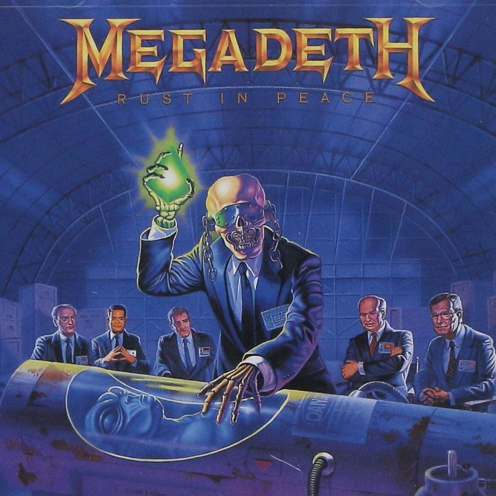

you can commonly used font combinations from https://www.w3schools.com/cssref/css_websafe_fonts.asp
Rust in Peace is the fourth studio album by American heavy metal band Megadeth, released on September 24, 1990 by Capitol Records. It has been mentioned as one of the best thrash metal records of all time by publications such as Decibel and Kerrang!, and listed in the reference book 1001 Albums You Must Hear Before You DieRust in Peace was the first Megadeth album to feature lead guitarist Marty Friedman and drummer Nick Menza. The songs "Hangar 18" and "Holy Wars... The Punishment Due" were released as singles. A remixed and remastered version of the album featuring four bonus tracks was released in 2004.
